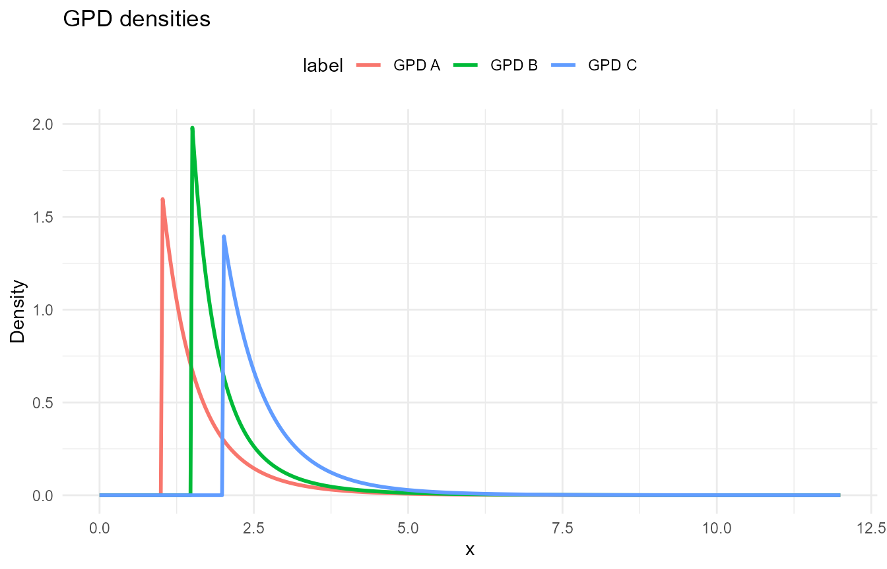
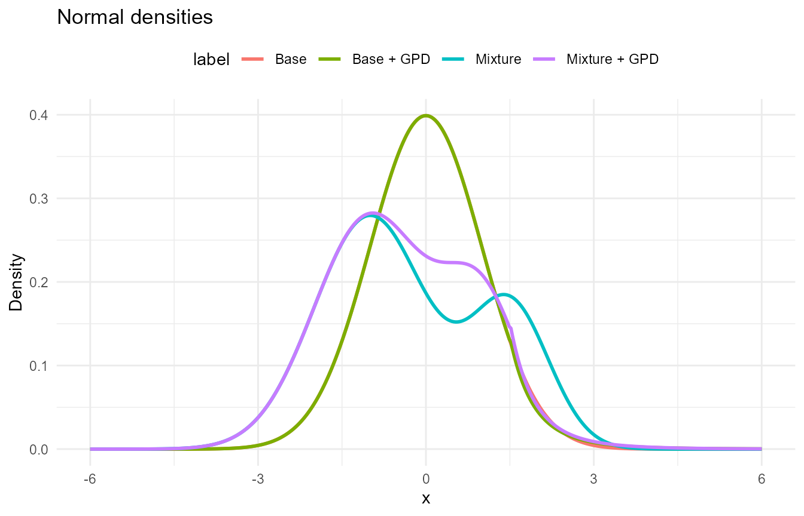
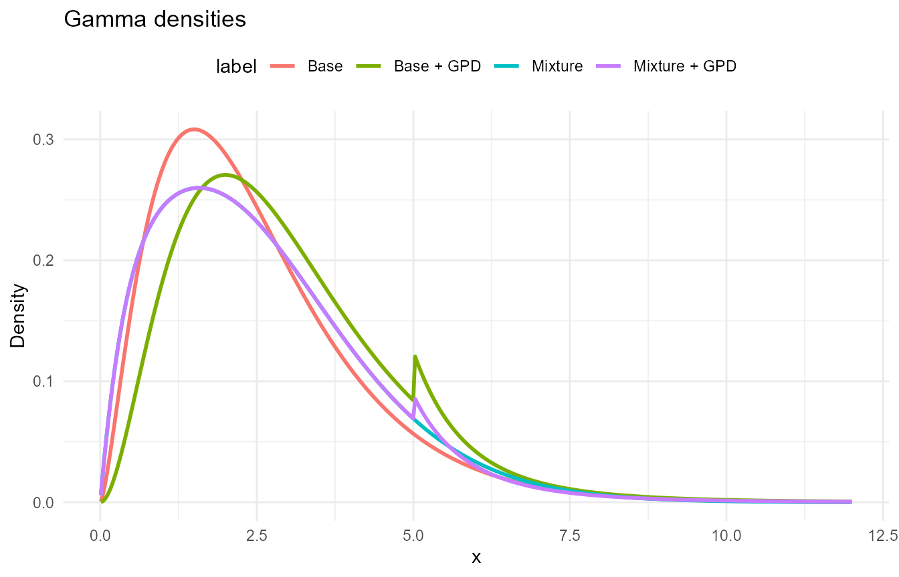
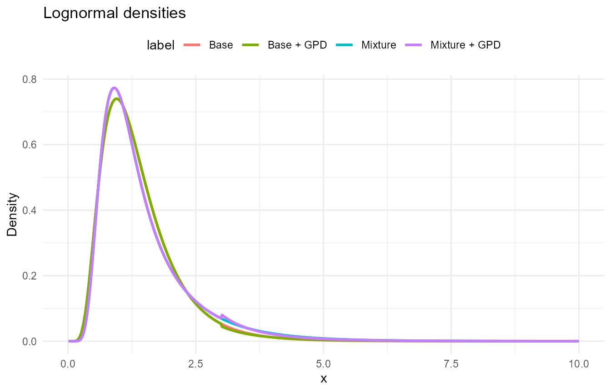
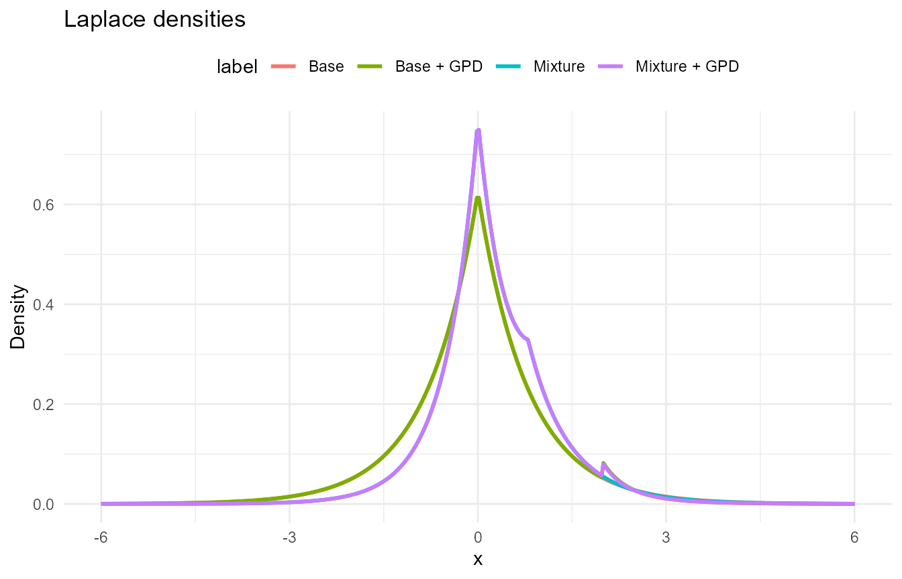
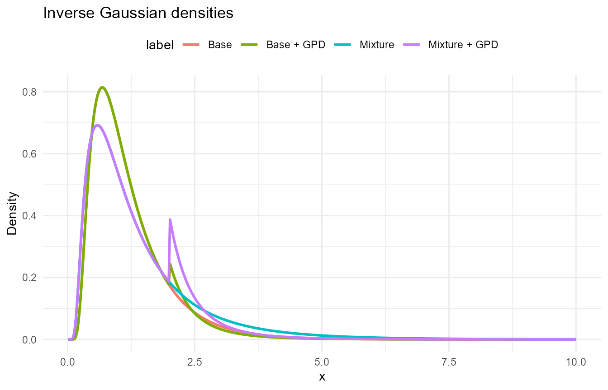
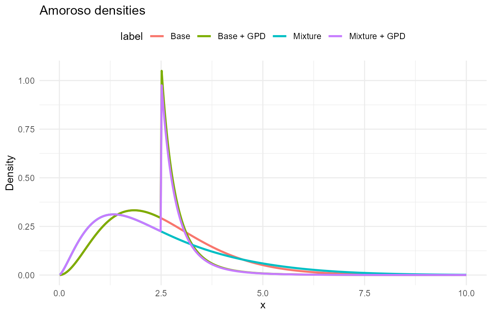
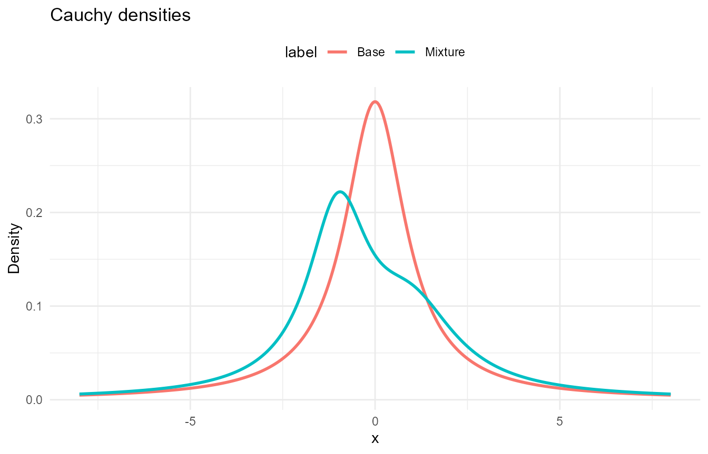

Overview
DPmixGPD supports multiple bulk kernels for mixture components and can optionally splice a Generalized Pareto Distribution (GPD) tail beyond a threshold.
All examples below use vectorized R wrappers (lowercase) only.
The d*, p*, q*,
r* prefixes mean:
-
d*: density (PDF); supportslogwhere available. -
p*: distribution (CDF); supportslower.tailandlog.p. -
q*: quantile; supportslower.tailandlog.p. -
r*: random generation; supportsn.
GPD variants add threshold, tail_scale, and
tail_shape.
See Complete Function Reference at the end for the
full d/p/q/r sets (R + NIMBLE) and Rd links.
Generalized Pareto (GPD)
Functions
- Base:
dgpd,pgpd,qgpd,rgpd
sets <- list(
list(label = "GPD A", fn = dgpd, params = list(threshold = 1.0, scale = 0.6, shape = 0.15)),
list(label = "GPD B", fn = dgpd, params = list(threshold = 1.5, scale = 0.5, shape = 0.25)),
list(label = "GPD C", fn = dgpd, params = list(threshold = 2.0, scale = 0.7, shape = 0.10))
)
param_table("GPD parameter sets", sets)| Label | Parameters |
|---|---|
| GPD A | threshold = 1, scale = 0.6, shape = 0.15 |
| GPD B | threshold = 1.5, scale = 0.5, shape = 0.25 |
| GPD C | threshold = 2, scale = 0.7, shape = 0.1 |
variants <- list(
list(label = "GPD A", d = dgpd, p = pgpd, q = qgpd, r = rgpd,
params = list(threshold = 1.0, scale = 0.6, shape = 0.15)),
list(label = "GPD B", d = dgpd, p = pgpd, q = qgpd, r = rgpd,
params = list(threshold = 1.5, scale = 0.5, shape = 0.25)),
list(label = "GPD C", d = dgpd, p = pgpd, q = qgpd, r = rgpd,
params = list(threshold = 2.0, scale = 0.7, shape = 0.10))
)
demo_table("GPD function demo (x = 2.0, p = 0.8, n = 3)", variants, x = 2.0)| Variant | d(x) | p(x) | q(p) | r(n) |
|---|---|---|---|---|
| GPD A | 0.301 | 0.774 | 2.09 | 1.189, 1.289, 1.544 |
| GPD B | 0.655 | 0.590 | 2.49 | 3.134, 1.616, 3.042 |
| GPD C | 1.429 | 0.000 | 3.22 | 4.35, 2.799, 2.73 |

Normal
Functions
- Base:
dnorm,pnorm,qnorm,rnorm - Base + GPD:
dnormgpd,pnormgpd,qnormgpd,rnormgpd - Mixture:
dnormmix,pnormmix,qnormmix,rnormmix - Mixture + GPD:
dnormmixgpd,pnormmixgpd,qnormmixgpd,rnormmixgpd
sets <- list(
list(label = "Base", fn = dnorm, params = list(mean = 0, sd = 1)),
list(label = "Base + GPD", fn = dnormgpd,
params = list(mean = 0, sd = 1, threshold = 1.5, tail_scale = 0.5, tail_shape = 0.2)),
list(label = "Mixture", fn = dnormmix,
params = list(w = c(0.7, 0.3), mean = c(-1, 1.5), sd = c(1.0, 0.7))),
list(label = "Mixture + GPD", fn = dnormmixgpd,
params = list(w = c(0.7, 0.3), mean = c(-1, 1), sd = c(1.0, 0.7),
threshold = 1.5, tail_scale = 0.5, tail_shape = 0.2))
)
param_table("Normal parameter sets", sets)| Label | Parameters |
|---|---|
| Base | mean = 0, sd = 1 |
| Base + GPD | mean = 0, sd = 1, threshold = 1.5, tail_scale = 0.5, tail_shape = 0.2 |
| Mixture | w = (0.7, 0.3), mean = (-1, 1.5), sd = (1, 0.7) |
| Mixture + GPD | w = (0.7, 0.3), mean = (-1, 1), sd = (1, 0.7), threshold = 1.5, tail_scale = 0.5, tail_shape = 0.2 |
variants <- list(
list(label = "Base", d = dnorm, p = pnorm, q = qnorm, r = rnorm,
params = list(mean = 0, sd = 1)),
list(label = "Base + GPD", d = dnormgpd, p = pnormgpd, q = qnormgpd, r = rnormgpd,
params = list(mean = 0, sd = 1, threshold = 1.5, tail_scale = 0.5, tail_shape = 0.2)),
list(label = "Mixture", d = dnormmix, p = pnormmix, q = qnormmix, r = rnormmix,
params = list(w = c(0.7, 0.3), mean = c(-1, 1.5), sd = c(1.0, 0.7))),
list(label = "Mixture + GPD", d = dnormmixgpd, p = pnormmixgpd, q = qnormmixgpd, r = rnormmixgpd,
params = list(w = c(0.7, 0.3), mean = c(-1, 1), sd = c(1.0, 0.7),
threshold = 1.5, tail_scale = 0.5, tail_shape = 0.2))
)
demo_table("Normal function demo (x = 0.5, p = 0.8, n = 3)", variants, x = 0.5)| Variant | d(x) | p(x) | q(p) | r(n) |
|---|---|---|---|---|
| Base | 0.352 | 0.691 | 0.842 | -1.54, -0.929, -0.295 |
| Base + GPD | 0.352 | 0.691 | 0.842 | 0.576, 0.764, 0.39 |
| Mixture | 0.152 | 0.676 | 1.252 | -1.289, 0.125, -0.748 |
| Mixture + GPD | 0.223 | 0.724 | 0.841 | 1.305, 0.843, 1.093 |

Gamma
Functions
- Base:
dgamma,pgamma,qgamma,rgamma - Base + GPD:
dgammagpd,pgammagpd,qgammagpd,rgammagpd - Mixture:
dgammamix,pgammamix,qgammamix,rgammamix - Mixture + GPD:
dgammamixgpd,pgammamixgpd,qgammamixgpd,rgammamixgpd
sets <- list(
list(label = "Base", fn = dgamma, params = list(shape = 2.5, scale = 1.0)),
list(label = "Base + GPD", fn = dgammagpd,
params = list(shape = 3, scale = 1.0, threshold = 5.0, tail_scale = 1.0, tail_shape = 0.2)),
list(label = "Mixture", fn = dgammamix,
params = list(w = c(0.6, 0.4), shape = c(2, 5), scale = c(1.0, 0.7))),
list(label = "Mixture + GPD", fn = dgammamixgpd,
params = list(w = c(0.6, 0.4), shape = c(2, 5), scale = c(1.0, 0.7),
threshold = 5.0, tail_scale = 1.0, tail_shape = 0.2))
)
param_table("Gamma parameter sets", sets)| Label | Parameters |
|---|---|
| Base | shape = 2.5, scale = 1 |
| Base + GPD | shape = 3, scale = 1, threshold = 5, tail_scale = 1, tail_shape = 0.2 |
| Mixture | w = (0.6, 0.4), shape = (2, 5), scale = (1, 0.7) |
| Mixture + GPD | w = (0.6, 0.4), shape = (2, 5), scale = (1, 0.7), threshold = 5, tail_scale = 1, tail_shape = 0.2 |
variants <- list(
list(label = "Base", d = dgamma, p = pgamma, q = qgamma, r = rgamma,
params = list(shape = 2.5, scale = 1.0)),
list(label = "Base + GPD", d = dgammagpd, p = pgammagpd, q = qgammagpd, r = rgammagpd,
params = list(shape = 3, scale = 1.0, threshold = 5.0, tail_scale = 1.0, tail_shape = 0.2)),
list(label = "Mixture", d = dgammamix, p = pgammamix, q = qgammamix, r = rgammamix,
params = list(w = c(0.6, 0.4), shape = c(2, 5), scale = c(1.0, 0.7))),
list(label = "Mixture + GPD", d = dgammamixgpd, p = pgammamixgpd, q = qgammamixgpd, r = rgammamixgpd,
params = list(w = c(0.6, 0.4), shape = c(2, 5), scale = c(1.0, 0.7),
threshold = 5.0, tail_scale = 1.0, tail_shape = 0.2))
)
demo_table("Gamma function demo (x = 3.0, p = 0.8, n = 3)", variants, x = 3.0)| Variant | d(x) | p(x) | q(p) | r(n) |
|---|---|---|---|---|
| Base | 0.195 | 0.694 | 3.64 | 3.299, 1.92, 1.921 |
| Base + GPD | 0.224 | 0.577 | 4.28 | 0.715, 3.204, 5.36 |
| Mixture | 0.200 | 0.651 | 3.89 | 1.016, 2.522, 2.564 |
| Mixture + GPD | 0.200 | 0.651 | 3.89 | 3.4, 6.301, 0.997 |

Lognormal
Functions
- Base:
dlnorm,plnorm,qlnorm,rlnorm - Base + GPD:
dlognormalgpd,plognormalgpd,qlognormalgpd,rlognormalgpd - Mixture:
dlognormalmix,plognormalmix,qlognormalmix,rlognormalmix - Mixture + GPD:
dlognormalmixgpd,plognormalmixgpd,qlognormalmixgpd,rlognormalmixgpd
sets <- list(
list(label = "Base", fn = dlnorm, params = list(meanlog = 0.2, sdlog = 0.5)),
list(label = "Base + GPD", fn = dlognormalgpd,
params = list(meanlog = 0.2, sdlog = 0.5, threshold = 3.0, tail_scale = 0.8, tail_shape = 0.2)),
list(label = "Mixture", fn = dlognormalmix,
params = list(w = c(0.6, 0.4), meanlog = c(0, 0.6), sdlog = c(0.4, 0.5))),
list(label = "Mixture + GPD", fn = dlognormalmixgpd,
params = list(w = c(0.6, 0.4), meanlog = c(0, 0.6), sdlog = c(0.4, 0.5),
threshold = 3.0, tail_scale = 0.8, tail_shape = 0.2))
)
param_table("Lognormal parameter sets", sets)| Label | Parameters |
|---|---|
| Base | meanlog = 0.2, sdlog = 0.5 |
| Base + GPD | meanlog = 0.2, sdlog = 0.5, threshold = 3, tail_scale = 0.8, tail_shape = 0.2 |
| Mixture | w = (0.6, 0.4), meanlog = (0, 0.6), sdlog = (0.4, 0.5) |
| Mixture + GPD | w = (0.6, 0.4), meanlog = (0, 0.6), sdlog = (0.4, 0.5), threshold = 3, tail_scale = 0.8, tail_shape = 0.2 |
variants <- list(
list(label = "Base", d = dlnorm, p = plnorm, q = qlnorm, r = rlnorm,
params = list(meanlog = 0.2, sdlog = 0.5)),
list(label = "Base + GPD", d = dlognormalgpd, p = plognormalgpd, q = qlognormalgpd, r = rlognormalgpd,
params = list(meanlog = 0.2, sdlog = 0.5, threshold = 3.0, tail_scale = 0.8, tail_shape = 0.2)),
list(label = "Mixture", d = dlognormalmix, p = plognormalmix, q = qlognormalmix, r = rlognormalmix,
params = list(w = c(0.6, 0.4), meanlog = c(0, 0.6), sdlog = c(0.4, 0.5))),
list(label = "Mixture + GPD", d = dlognormalmixgpd, p = plognormalmixgpd,
q = qlognormalmixgpd, r = rlognormalmixgpd,
params = list(w = c(0.6, 0.4), meanlog = c(0, 0.6), sdlog = c(0.4, 0.5),
threshold = 3.0, tail_scale = 0.8, tail_shape = 0.2))
)
demo_table("Lognormal function demo (x = 1.2, p = 0.8, n = 3)", variants, x = 1.2)| Variant | d(x) | p(x) | q(p) | r(n) |
|---|---|---|---|---|
| Base | 0.664 | 0.486 | 1.86 | 1.613, 0.866, 0.857 |
| Base + GPD | 0.664 | 0.486 | 1.86 | 2.178, 1.155, 1.395 |
| Mixture | 0.637 | 0.486 | 1.98 | 0.783, 1.224, 1.774 |
| Mixture + GPD | 0.637 | 0.486 | 1.98 | 4.204, 0.659, 0.947 |

Laplace
Functions
- Base:
ddexp,pdexp,qdexp,rdexp - Base + GPD:
dlaplacegpd,plaplacegpd,qlaplacegpd,rlaplacegpd - Mixture:
dlaplacemix,plaplacemix,qlaplacemix,rlaplacemix - Mixture + GPD:
dlaplacemixgpd,plaplacemixgpd,qlaplacemixgpd,rlaplacemixgpd
sets <- list(
list(label = "Base", fn = nimble::ddexp, params = list(location = 0, scale = 0.8)),
list(label = "Base + GPD", fn = dlaplacegpd,
params = list(location = 0, scale = 0.8, threshold = 2.0, tail_scale = 0.5, tail_shape = 0.2)),
list(label = "Mixture", fn = dlaplacemix,
params = list(w = c(0.7, 0.3), location = c(0, 0.8), scale = c(0.5, 0.8))),
list(label = "Mixture + GPD", fn = dlaplacemixgpd,
params = list(w = c(0.7, 0.3), location = c(0, 0.8), scale = c(0.5, 0.8),
threshold = 2.0, tail_scale = 0.5, tail_shape = 0.2))
)
param_table("Laplace parameter sets", sets)| Label | Parameters |
|---|---|
| Base | location = 0, scale = 0.8 |
| Base + GPD | location = 0, scale = 0.8, threshold = 2, tail_scale = 0.5, tail_shape = 0.2 |
| Mixture | w = (0.7, 0.3), location = (0, 0.8), scale = (0.5, 0.8) |
| Mixture + GPD | w = (0.7, 0.3), location = (0, 0.8), scale = (0.5, 0.8), threshold = 2, tail_scale = 0.5, tail_shape = 0.2 |
variants <- list(
list(label = "Base", d = nimble::ddexp, p = nimble::pdexp, q = nimble::qdexp, r = nimble::rdexp,
params = list(location = 0, scale = 0.8)),
list(label = "Base + GPD", d = dlaplacegpd, p = plaplacegpd, q = qlaplacegpd, r = rlaplacegpd,
params = list(location = 0, scale = 0.8, threshold = 2.0, tail_scale = 0.5, tail_shape = 0.2)),
list(label = "Mixture", d = dlaplacemix, p = plaplacemix, q = qlaplacemix, r = rlaplacemix,
params = list(w = c(0.7, 0.3), location = c(0, 0.8), scale = c(0.5, 0.8))),
list(label = "Mixture + GPD", d = dlaplacemixgpd, p = plaplacemixgpd,
q = qlaplacemixgpd, r = rlaplacemixgpd,
params = list(w = c(0.7, 0.3), location = c(0, 0.8), scale = c(0.5, 0.8),
threshold = 2.0, tail_scale = 0.5, tail_shape = 0.2))
)
demo_table("Laplace function demo (x = 0.5, p = 0.8, n = 3)", variants, x = 0.5)| Variant | d(x) | p(x) | q(p) | r(n) |
|---|---|---|---|---|
| Base | 0.335 | 0.732 | 0.733 | 0.651, -0.018, -1.428 |
| Base + GPD | 0.335 | 0.732 | 0.733 | -0.228, 0.097, 0.012 |
| Mixture | 0.386 | 0.674 | 0.866 | 0.783, -0.247, 0.115 |
| Mixture + GPD | 0.386 | 0.674 | 0.866 | -0, -0.402, 0.617 |

Inverse Gaussian
Functions
- Base:
dinvgauss,pinvgauss,qinvgauss,rinvgauss - Base + GPD:
dinvgaussgpd,pinvgaussgpd,qinvgaussgpd,rinvgaussgpd - Mixture:
dinvgaussmix,pinvgaussmix,qinvgaussmix,rinvgaussmix - Mixture + GPD:
dinvgaussmixgpd,pinvgaussmixgpd,qinvgaussmixgpd,rinvgaussmixgpd
sets <- list(
list(label = "Base", fn = dinvgauss, params = list(mean = 1.2, shape = 3.0)),
list(label = "Base + GPD", fn = dinvgaussgpd,
params = list(mean = 1.2, shape = 3.0, threshold = 2.0, tail_scale = 0.5, tail_shape = 0.2)),
list(label = "Mixture", fn = dinvgaussmix,
params = list(w = c(0.6, 0.4), mean = c(1.0, 2.0), shape = c(2.0, 4.0))),
list(label = "Mixture + GPD", fn = dinvgaussmixgpd,
params = list(w = c(0.6, 0.4), mean = c(1.0, 2.0), shape = c(2.0, 4.0),
threshold = 2.0, tail_scale = 0.5, tail_shape = 0.2))
)
param_table("Inverse Gaussian parameter sets", sets)| Label | Parameters |
|---|---|
| Base | mean = 1.2, shape = 3 |
| Base + GPD | mean = 1.2, shape = 3, threshold = 2, tail_scale = 0.5, tail_shape = 0.2 |
| Mixture | w = (0.6, 0.4), mean = (1, 2), shape = (2, 4) |
| Mixture + GPD | w = (0.6, 0.4), mean = (1, 2), shape = (2, 4), threshold = 2, tail_scale = 0.5, tail_shape = 0.2 |
variants <- list(
list(label = "Base", d = dinvgauss, p = pinvgauss, q = qinvgauss, r = rinvgauss,
params = list(mean = 1.2, shape = 3.0)),
list(label = "Base + GPD", d = dinvgaussgpd, p = pinvgaussgpd, q = qinvgaussgpd, r = rinvgaussgpd,
params = list(mean = 1.2, shape = 3.0, threshold = 2.0, tail_scale = 0.5, tail_shape = 0.2)),
list(label = "Mixture", d = dinvgaussmix, p = pinvgaussmix, q = qinvgaussmix, r = rinvgaussmix,
params = list(w = c(0.6, 0.4), mean = c(1.0, 2.0), shape = c(2.0, 4.0))),
list(label = "Mixture + GPD", d = dinvgaussmixgpd, p = pinvgaussmixgpd,
q = qinvgaussmixgpd, r = rinvgaussmixgpd,
params = list(w = c(0.6, 0.4), mean = c(1.0, 2.0), shape = c(2.0, 4.0),
threshold = 2.0, tail_scale = 0.5, tail_shape = 0.2))
)
demo_table("Inverse Gaussian function demo (x = 1.5, p = 0.8, n = 3)", variants, x = 1.5)| Variant | d(x) | p(x) | q(p) | r(n) |
|---|---|---|---|---|
| Base | 0.353 | 0.747 | 1.67 | 1.045, 1.743, 0.645 |
| Base + GPD | 0.353 | 0.747 | 1.67 | 2.604, 0.539, 2.376 |
| Mixture | 0.316 | 0.678 | 2.00 | 3.693, 1.838, 0.372 |
| Mixture + GPD | 0.316 | 0.678 | 2.00 | 1.433, 0.649, 1.582 |

Amoroso
Functions
- Base:
damoroso,pamoroso,qamoroso,ramoroso - Base + GPD:
damorosogpd,pamorosogpd,qamorosogpd,ramorosogpd - Mixture:
damorosomix,pamorosomix,qamorosomix,ramorosomix - Mixture + GPD:
damorosomixgpd,pamorosomixgpd,qamorosomixgpd,ramorosomixgpd
sets <- list(
list(label = "Base", fn = damoroso,
params = list(loc = 0, scale = 1.2, shape1 = 2.5, shape2 = 1.2)),
list(label = "Base + GPD", fn = damorosogpd,
params = list(loc = 0, scale = 1.2, shape1 = 2.5, shape2 = 1.2,
threshold = 2.5, tail_scale = 0.4, tail_shape = 0.2)),
list(label = "Mixture", fn = damorosomix,
params = list(w = c(0.6, 0.4), loc = c(0, 0), scale = c(1.0, 1.5),
shape1 = c(2, 3), shape2 = c(1.2, 1.2))),
list(label = "Mixture + GPD", fn = damorosomixgpd,
params = list(w = c(0.6, 0.4), loc = c(0, 0), scale = c(1.0, 1.5),
shape1 = c(2, 3), shape2 = c(1.2, 1.2),
threshold = 2.5, tail_scale = 0.4, tail_shape = 0.2))
)
param_table("Amoroso parameter sets", sets)| Label | Parameters |
|---|---|
| Base | loc = 0, scale = 1.2, shape1 = 2.5, shape2 = 1.2 |
| Base + GPD | loc = 0, scale = 1.2, shape1 = 2.5, shape2 = 1.2, threshold = 2.5, tail_scale = 0.4, tail_shape = 0.2 |
| Mixture | w = (0.6, 0.4), loc = (0, 0), scale = (1, 1.5), shape1 = (2, 3), shape2 = (1.2, 1.2) |
| Mixture + GPD | w = (0.6, 0.4), loc = (0, 0), scale = (1, 1.5), shape1 = (2, 3), shape2 = (1.2, 1.2), threshold = 2.5, tail_scale = 0.4, tail_shape = 0.2 |
variants <- list(
list(label = "Base", d = damoroso, p = pamoroso, q = qamoroso, r = ramoroso,
params = list(loc = 0, scale = 1.2, shape1 = 2.5, shape2 = 1.2)),
list(label = "Base + GPD", d = damorosogpd, p = pamorosogpd, q = qamorosogpd, r = ramorosogpd,
params = list(loc = 0, scale = 1.2, shape1 = 2.5, shape2 = 1.2,
threshold = 2.5, tail_scale = 0.4, tail_shape = 0.2)),
list(label = "Mixture", d = damorosomix, p = pamorosomix, q = qamorosomix, r = ramorosomix,
params = list(w = c(0.6, 0.4), loc = c(0, 0), scale = c(1.0, 1.5),
shape1 = c(2, 3), shape2 = c(1.2, 1.2))),
list(label = "Mixture + GPD", d = damorosomixgpd, p = pamorosomixgpd,
q = qamorosomixgpd, r = ramorosomixgpd,
params = list(w = c(0.6, 0.4), loc = c(0, 0), scale = c(1.0, 1.5),
shape1 = c(2, 3), shape2 = c(1.2, 1.2),
threshold = 2.5, tail_scale = 0.4, tail_shape = 0.2))
)
demo_table("Amoroso function demo (x = 1.8, p = 0.8, n = 3)", variants, x = 1.8)| Variant | d(x) | p(x) | q(p) | r(n) |
|---|---|---|---|---|
| Base | 0.333 | 0.339 | 3.53 | 1.002, 3.323, 4.955 |
| Base + GPD | 0.333 | 0.339 | 2.84 | 2.653, 4.192, 2.673 |
| Mixture | 0.291 | 0.412 | 3.71 | 0.767, 1.564, 3.452 |
| Mixture + GPD | 0.291 | 0.412 | 2.81 | 1.346, 2.678, 1.888 |

Cauchy
Functions
- Base:
dcauchy_vec,pcauchy_vec,qcauchy_vec,rcauchy_vec - Mixture:
dcauchymix,pcauchymix,qcauchymix,rcauchymix
sets <- list(
list(label = "Base", fn = dcauchy_vec, params = list(location = 0, scale = 1.0)),
list(label = "Mixture", fn = dcauchymix,
params = list(w = c(0.6, 0.4), location = c(-1, 1), scale = c(1.0, 1.5)))
)
param_table("Cauchy parameter sets", sets)| Label | Parameters |
|---|---|
| Base | location = 0, scale = 1 |
| Mixture | w = (0.6, 0.4), location = (-1, 1), scale = (1, 1.5) |
variants <- list(
list(label = "Base", d = dcauchy_vec, p = pcauchy_vec, q = qcauchy_vec, r = rcauchy_vec,
params = list(location = 0, scale = 1.0)),
list(label = "Mixture", d = dcauchymix, p = pcauchymix, q = qcauchymix, r = rcauchymix,
params = list(w = c(0.6, 0.4), location = c(-1, 1), scale = c(1.0, 1.5)))
)
demo_table("Cauchy function demo (x = 0.5, p = 0.8, n = 3)", variants, x = 0.5)| Variant | d(x) | p(x) | q(p) | r(n) |
|---|---|---|---|---|
| Base | 0.255 | 0.648 | 1.38 | -0.36, 0.678, 0.677 |
| Mixture | 0.135 | 0.647 | 1.84 | -1.225, -1.696, 2.457 |

Complete Function Reference
| Distribution | Variant | Rd page | NIMBLE call | R call | Vector params | Scalar params |
|---|---|---|---|---|---|---|
| GPD | Standalone | gpd | dGpd / pGpd / qGpd / rGpd | dgpd / pgpd / qgpd / rgpd | threshold, scale, shape | |
| Normal | Base | stats::Normal | dnorm / pnorm / qnorm / rnorm | dnorm / pnorm / qnorm / rnorm | mean, sd | |
| Base + GPD | normal_gpd | dNormGpd / pNormGpd / qNormGpd / rNormGpd | dnormgpd / pnormgpd / qnormgpd / rnormgpd | mean, sd, threshold, tail_scale, tail_shape | ||
| Mixture | normal_mix | dNormMix / pNormMix / qNormMix / rNormMix | dnormmix / pnormmix / qnormmix / rnormmix | w, mean, sd | ||
| Mixture + GPD | normal_mixgpd | dNormMixGpd / pNormMixGpd / qNormMixGpd / rNormMixGpd | dnormmixgpd / pnormmixgpd / qnormmixgpd / rnormmixgpd | w, mean, sd | threshold, tail_scale, tail_shape | |
| Gamma | Base | stats::GammaDist | dgamma / pgamma / qgamma / rgamma | dgamma / pgamma / qgamma / rgamma | shape, scale | |
| Base + GPD | gamma_gpd | dGammaGpd / pGammaGpd / qGammaGpd / rGammaGpd | dgammagpd / pgammagpd / qgammagpd / rgammagpd | shape, scale, threshold, tail_scale, tail_shape | ||
| Mixture | gamma_mix | dGammaMix / pGammaMix / qGammaMix / rGammaMix | dgammamix / pgammamix / qgammamix / rgammamix | w, shape, scale | ||
| Mixture + GPD | gamma_mixgpd | dGammaMixGpd / pGammaMixGpd / qGammaMixGpd / rGammaMixGpd | dgammamixgpd / pgammamixgpd / qgammamixgpd / rgammamixgpd | w, shape, scale | threshold, tail_scale, tail_shape | |
| Lognormal | Base | stats::Lognormal | dlnorm / plnorm / qlnorm / rlnorm | dlnorm / plnorm / qlnorm / rlnorm | meanlog, sdlog | |
| Base + GPD | lognormal_gpd | dLognormalGpd / pLognormalGpd / qLognormalGpd / rLognormalGpd | dlognormalgpd / plognormalgpd / qlognormalgpd / rlognormalgpd | meanlog, sdlog, threshold, tail_scale, tail_shape | ||
| Mixture | lognormal_mix | dLognormalMix / pLognormalMix / qLognormalMix / rLognormalMix | dlognormalmix / plognormalmix / qlognormalmix / rlognormalmix | w, meanlog, sdlog | ||
| Mixture + GPD | lognormal_mixgpd | dLognormalMixGpd / pLognormalMixGpd / qLognormalMixGpd / rLognormalMixGpd | dlognormalmixgpd / plognormalmixgpd / qlognormalmixgpd / rlognormalmixgpd | w, meanlog, sdlog | threshold, tail_scale, tail_shape | |
| Laplace | Base | nimble::ddexp | ddexp / pdexp / qdexp / rdexp | ddexp / pdexp / qdexp / rdexp | location, scale | |
| Base + GPD | laplace_gpd | dLaplaceGpd / pLaplaceGpd / qLaplaceGpd / rLaplaceGpd | dlaplacegpd / plaplacegpd / qlaplacegpd / rlaplacegpd | location, scale, threshold, tail_scale, tail_shape | ||
| Mixture | laplace_mix | dLaplaceMix / pLaplaceMix / qLaplaceMix / rLaplaceMix | dlaplacemix / plaplacemix / qlaplacemix / rlaplacemix | w, location, scale | ||
| Mixture + GPD | laplace_MixGpd | dLaplaceMixGpd / pLaplaceMixGpd / qLaplaceMixGpd / rLaplaceMixGpd | dlaplacemixgpd / plaplacemixgpd / qlaplacemixgpd / rlaplacemixgpd | w, location, scale | threshold, tail_scale, tail_shape | |
| Inverse Gaussian | Base | InvGauss | dInvGauss / pInvGauss / qInvGauss / rInvGauss | dinvgauss / pinvgauss / qinvgauss / rinvgauss | mean, shape | |
| Base + GPD | InvGauss_gpd | dInvGaussGpd / pInvGaussGpd / qInvGaussGpd / rInvGaussGpd | dinvgaussgpd / pinvgaussgpd / qinvgaussgpd / rinvgaussgpd | mean, shape, threshold, tail_scale, tail_shape | ||
| Mixture | InvGauss_mix | dInvGaussMix / pInvGaussMix / qInvGaussMix / rInvGaussMix | dinvgaussmix / pinvgaussmix / qinvgaussmix / rinvgaussmix | w, mean, shape | ||
| Mixture + GPD | InvGauss_mixgpd | dInvGaussMixGpd / pInvGaussMixGpd / qInvGaussMixGpd / rInvGaussMixGpd | dinvgaussmixgpd / pinvgaussmixgpd / qinvgaussmixgpd / rinvgaussmixgpd | w, mean, shape | threshold, tail_scale, tail_shape | |
| Amoroso | Base | amoroso | dAmoroso / pAmoroso / qAmoroso / rAmoroso | damoroso / pamoroso / qamoroso / ramoroso | loc, scale, shape1, shape2 | |
| Base + GPD | amoroso_gpd | dAmorosoGpd / pAmorosoGpd / qAmorosoGpd / rAmorosoGpd | damorosogpd / pamorosogpd / qamorosogpd / ramorosogpd | loc, scale, shape1, shape2, threshold, tail_scale, tail_shape | ||
| Mixture | amoroso_mix | dAmorosoMix / pAmorosoMix / qAmorosoMix / rAmorosoMix | damorosomix / pamorosomix / qamorosomix / ramorosomix | w, loc, scale, shape1, shape2 | ||
| Mixture + GPD | amoroso_mixgpd | dAmorosoMixGpd / pAmorosoMixGpd / qAmorosoMixGpd / rAmorosoMixGpd | damorosomixgpd / pamorosomixgpd / qamorosomixgpd / ramorosomixgpd | w, loc, scale, shape1, shape2 | threshold, tail_scale, tail_shape | |
| Cauchy | Base | cauchy | dCauchy / pCauchy / qCauchy / rCauchy | dcauchy_vec / pcauchy_vec / qcauchy_vec / rcauchy_vec | location, scale | |
| Mixture | cauchy_mix | dCauchyMix / pCauchyMix / qCauchyMix / rCauchyMix | dcauchymix / pcauchymix / qcauchymix / rcauchymix | w, location, scale |